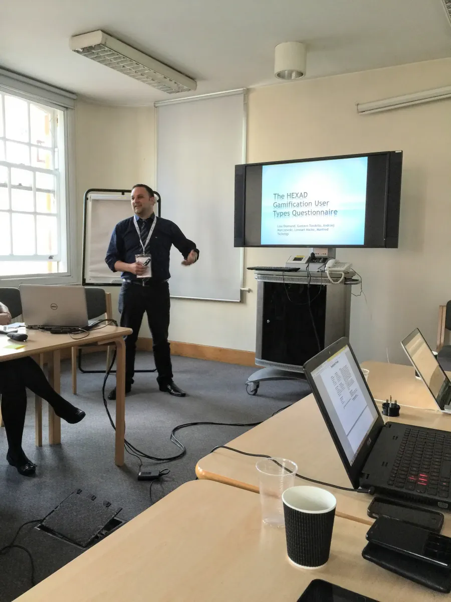
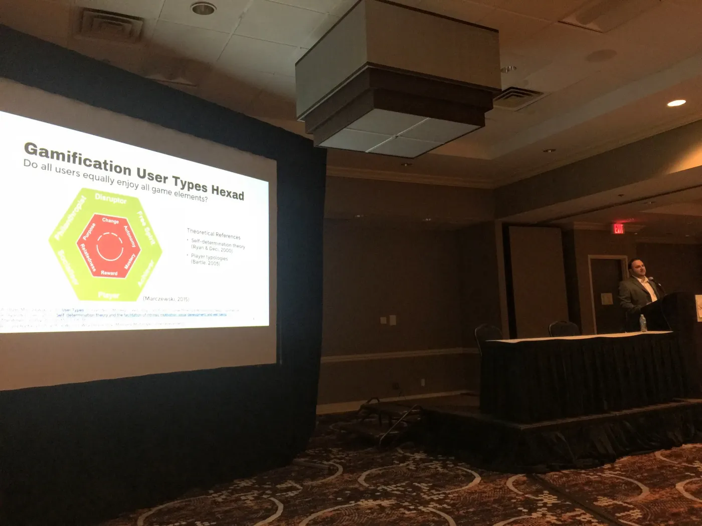

CHI PLAY 2026 · ten-year award
Lennart Nacke · Waterloo


We went from a rating form in July 2015 to the CHI PLAY stage in October 2016. We cut six of the 30 items. Two fit poorly: “I look out for my own interests” for Player and “I like to take changing things into my own hands” for Disruptor. The other four were the weakest item of each other type.
Click through the six types. The last click shows one illustrative respondent, high on Free Spirit, Achiever, and Player at once. Farther from the centre means a higher score.
Of 133 people, 40 took the survey again two weeks later. When answers match, the scale measures something stable. Player matched least (.36), so we flagged it to fix.
A brighter cell means a stronger link. Click once and each row moves to the type it matched. Pink rows change type, and no row stays with Philanthropist (Tondello et al., 2016, Table 7).
Citations per year on Google Scholar, as of November 5, 2026. The 2026 bar is still growing. The total also counts 14 citations that fall outside these years.
Both lines start at 100 in 2021, because we divide each year’s count by the 2021 count. Until 2021, Hexad citations grew faster than the field. Since then the field has doubled, but Hexad citations stayed near 75 a year. So the Hexad’s share fell from 5% to 2%.
OpenAlex, November 5, 2026: works with “gamification” in the title, and papers citing the Hexad. Both lines are set to 100 in 2021.
Each bar splits by the year its citations arrived, cyan for 2016 to magenta for 2026
Each dot is a paper, clockwise by year. Bigger dots have more citations; amber marks Hexad‑12.
The magenta ring holds papers that cite one of the papers in the first ring. Amber marks Hexad‑12.
Review papers carry the Hexad into fields that never cite it directly. Four reviews alone lead to 1,025 papers (15%): Nacke & Deterding (2017), Klock et al. (2020), Vermeir et al. (2020), and Bennani et al. (2021). All 32 reviews among the citers lead to a quarter of them.
At each stop, the papers citing it light up.
Each paper cites the one before it; bigger dots have more citations. Newest citer, November 3, 2026:
Citing papers with at least one author affiliated in each country, top 12
Citation counts from OpenAlex, November 4, 2026.
Researchers can now add the Hexad to a big survey and still trust the scores. Hexad‑12 matched people’s answers better and gave steadier scores than the 24-item version. In the authors’ words, it “resolves issues found in studies using the original Hexad scale.”
Very few people have the Disruptor as their top type: 1 in 133 in 2016, and about 2 in 133 today. It also gets the lowest scores, maybe because people don’t like to admit they enjoy breaking rules.
Outlined dots: the 133 people of 2016 by top type. Filled dots: Hexad‑12 shares, scaled to 133 people.
Hexad‑12 data: hexad.gamified.uk/data (Andrzej Marczewski), 23,502 tests, of which 12,454 have a single top type, retrieved November 4, 2026.
Average Hexad‑12 scores by age from 18,423 people, each age a different group. The axis starts at 15%. The lines cross between ages 21 and 29. One theory says why. When people feel they have less time left, they care more about helping others and less about rewards (Carstensen, Isaacowitz, & Charles, 1999).
Carstensen, L. L., Isaacowitz, D. M., & Charles, S. T. (1999). Taking time seriously: A theory of socioemotional selectivity. American Psychologist, 54(3), 165–181. https://doi.org/10.1037/0003-066X.54.3.165
Why: everyone scores on all six motivations, and the top score often wins by a hair. Across 23,502 Hexad‑12 tests the three highest shares sit within 0.3 points, and 47% of people tie on two or more types. A single label keeps one number and throws away five.
Hexad scores sit on a sliding scale (Tondello et al., 2019), and 47% of Hexad‑12 test takers tie on two or more types. We followed that idea to a model of traits, the steady parts of a person: Tondello, G. F., Arrambide, K., Ribeiro, G., Cen, A. J., & Nacke, L. E. (2019). “I don’t fit into a single type”: A trait model and scale of game playing preferences. INTERACT 2019. https://doi.org/10.1007/978-3-030-29384-0_23
Gamification titles grew 2.6 times from 2019 to 2025. The share citing the Hexad fell from 5% in 2021 to 2% in 2025.
languages, a free short form, and 23,502 Hexad‑12 results give researchers one shared way to measure what motivates players.Studies that use the same scale can be compared and added together
motivations, read together as a profile, keep the Hexad useful as research moves from fixed types to steady traits.Tondello et al. (2019); Krath et al. (2023)
citations on Google Scholar, 17 languages, 7 published validations, and 23,502 Hexad‑12 tests on the public site
Most of these studies are small, and the Hexad usually comes with other changes. So they show people used it, but they don’t prove it helped.
See every paper that cites us at acagamic.com/hexad